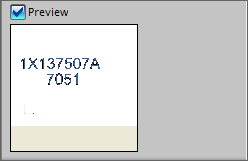
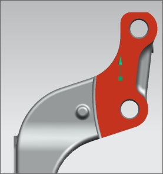

Place the decal on the middle of the face
-
In the Name group, in the Decal Name box, type engrave.
-
In the Image group, click Choose Image File
 .
.
-
Navigate to the parts directory and double-click des07_engrave_text.jpg.
Note
If you do not see the proper images, make sure the Files of type filter is set to .jpg
-
In the Image group, select the Preview check box to see a preview of the decal.

-
In the Object to Decal group, click Select Object
 .
.
-
In the Object to Decal group, with Select Object
highlighted, select the face of the support forging.

-
In the Placement group, set Anchor Type to Center.
-
In the Placement group, click Specify Origin and select Point on Face
 from the drop down.
from the drop down.
-
Click on the face.
This defines where the decal will be placed.
-
Click Specify Up Vector, then from the drop down select YC Axis to orient the decal.